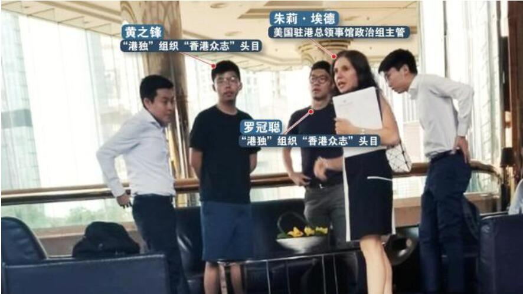

8月6日下午，有市民拍到"港独"组织"香港众志"头目黄之锋、罗冠聪等4人在香港某酒店与一外籍女士会面。事后，该外籍女子被证实为美国驻港总领事馆政治组主管朱莉·埃德。
据了解，朱莉·埃德精通精通汉语、阿拉伯语等多门外语，派驻中东时曾以人权及民主为由，策划颠覆活动，有"身份神秘的颠覆专家"之名。在美国务院工作期间，朱莉·埃德还参与编写抹黑中国内地及香港特区人权的报告。 据香港媒体今天报道，黄之峰在被追问下承认，曾与美国驻港领事交流，内容包括企图制裁香港的人权与民主法案等。而就在这次见面的第二天，“香港众志”在社交网站扬言，正在策划发动"九月罢课"活动。
针对美驻港总领馆官员接触香港“港独”组织头目一事，外交部驻港公署有关负责人今天紧急约见美国驻港总领馆高级官员，提出严正交涉，表达强烈不满和坚决反对，要求美方就此作出澄清。 公署有关负责人强烈敦促美驻港总领馆人员恪守相关国际法和国际关系基本准则，恪守领事人员身份与职责，立即与各种反中乱港分子划清界限，立即停止向违法暴力分子发出错误信号，立即停止插手香港事务，不要在错误的道路上越走越远。